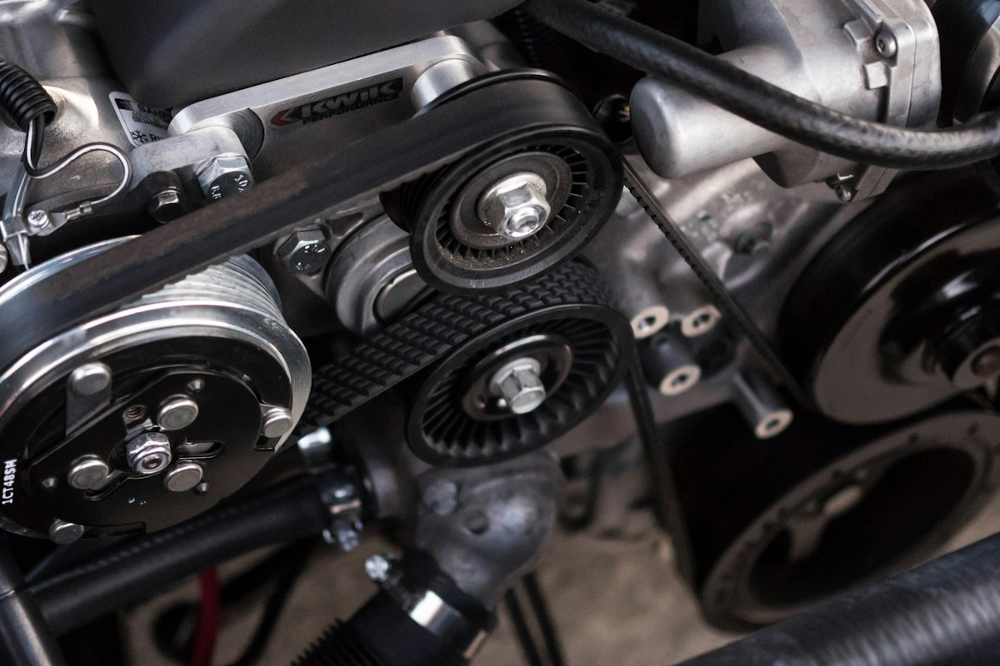

01 / الصحة
الرعاية الطبية
موقع رعاية طبية يعرض الخدمات الطبية والتخصصات المتاحة ومعلومات التواصل بطريقة واضحة ومنظمة. يتميز بتصميم هادئ ومتجاوب يساعد الزوار على الوصول إلى المعلومات الطبية بسهولة.
زيارة المشروعمجموعة من المواقع التي صممتها وطورتها لمجالات متنوعة. اختر أي مشروع لزيارة صفحته.
موقع رعاية طبية يعرض الخدمات الطبية والتخصصات المتاحة ومعلومات التواصل بطريقة واضحة ومنظمة. يتميز بتصميم هادئ ومتجاوب يساعد الزوار على الوصول إلى المعلومات الطبية بسهولة.
زيارة المشروع
موقع سيرة ذاتية رقمية يعرض المعلومات الشخصية والمهارات والخبرات العملية والمؤهلات التعليمية في تصميم احترافي. يضم أقسامًا منظمة للمشاريع ووسائل التواصل لتسهيل التعرف على صاحب السيرة الذاتية.
زيارة المشروع
موقع مقهى يعرض قائمة القهوة والمشروبات والحلويات مع صور جذابة للمنتجات. يتضمن نبذة عن المقهى ومعلومات التواصل وتصميمًا مريحًا يناسب هوية المقاهي العصرية.
زيارة المشروع
موقع مركز لياقة بدنية باسم «لياقتك» يعرض البرامج التدريبية والخدمات والأجهزة الرياضية المتاحة. يستخدم تصميمًا حيويًا ومتجاوبًا لمساعدة الزوار على التعرف على خيارات التدريب ومميزات المركز.
زيارة المشروع
موقع مركز صيانة سيارات يعرض خدمات الفحص والإصلاح والصيانة الدورية بطريقة منظمة. يتضمن معلومات عن المركز ووسائل التواصل لتسهيل استفسارات العملاء حول الخدمات المتاحة.
زيارة المشروعموقع مكتب «العدل للمحاماة والاستشارات القانونية» يعرض الخدمات القانونية ونبذة عن المكتب ومعلومات التواصل. يعتمد تصميمًا رسميًا وأنيقًا يعكس الاحترافية ويساعد الزوار على التعرف على الخدمات المقدمة.
زيارة المشروع